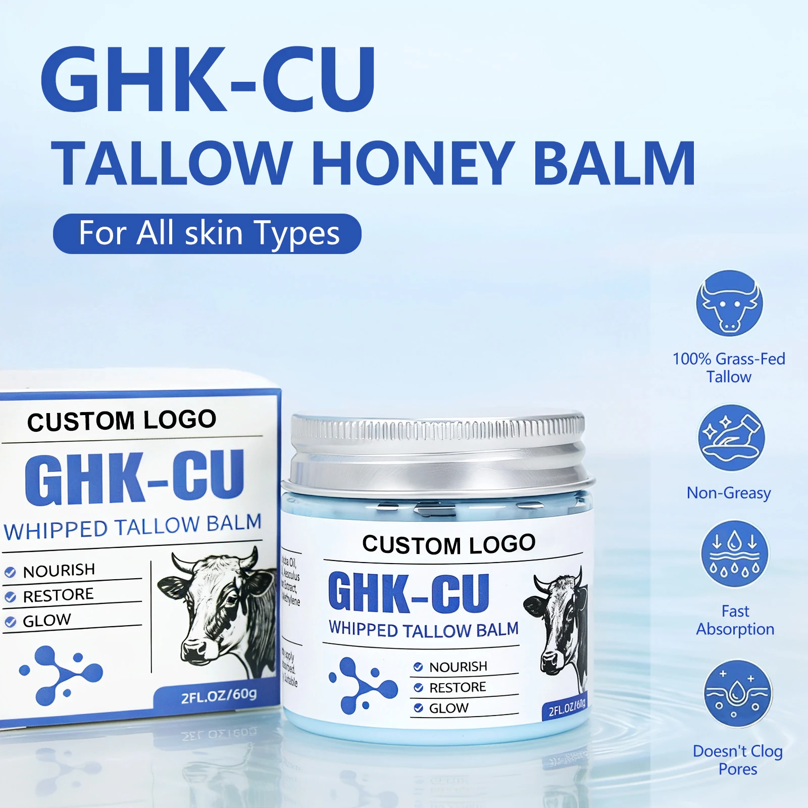

SKIN CARE • PRIVATE LABEL PRODUCT
Collagen Multi PDRN Balm, Hydrating Under Eye Care for Face, Neck & Smile Lines
This PDRN Pink Collagen Volume Multi Balm is a portable moisturizing stick designed for targeted face and neck care. Formulated with 5% Volufiline, collagen, and PDRN-inspired skincare ingredients, it helps improve the look of dryness, fine lines, dullness, and loss of firmness without heavy residue. The smooth balm texture glides easily onto the skin, making it suitable for the under-eye area, lips, smile lines, forehead, neck, and other dry zones.
Fast
Response
Response
Quality
Assurance
Assurance
OEM/ODM
Support
Support
Global
Shipping
Shipping
HighlightsIngredientsCustomizationFAQRelated Products
Product Highlights
Key Selling Points
Hydrating Under Eye Balm Stick
Multi-Use for Face & Targeted Areas
Smooth, Mess-Free & Travel Ready
Formula Reference
Key Ingredients
| Ingredient |
|---|
| PDRN |
B2B Customization
OEM / ODM Customization
Custom FormulaCustom Color / ScentCustom Bottle / Tube / JarCustom LabelCustom BoxCustom Size / VolumeMOQ: 1000pcsLead Time: 7-10 working days
Product FAQ
Questions About Collagen Multi PDRN Balm, Hydrating Under Eye Care for Face, Neck & Smile Lines
What is PDRN Pink Collagen Volume Multi Balm used for?
PDRN Pink Collagen Volume Multi Balm is used as a targeted moisturizing stick for the face, neck, under-eye area, lips, smile lines, and dry areas. It helps skin look smoother, plumper, and more refreshed.
What does 5% Volufiline do in a skincare balm?
5% Volufiline is commonly used in cosmetic formulas to support a fuller, plumper-looking skin appearance. In a balm stick, it works with moisturizing ingredients to help improve the look of dryness and fine lines.
Can this collagen volume balm be used under the eyes?
Yes, this multi balm can be gently applied around the under-eye area to help reduce the appearance of dryness and tired-looking skin. Avoid direct contact with the eyes and follow the product instructions.
Is this balm stick suitable for use before or after makeup?
Yes. The balm can be used as the final step in a skincare routine or reapplied throughout the day before or after makeup when the skin feels dry.
Which areas can I apply the PDRN collagen balm to?
It can be applied to the forehead, under-eye area, smile lines, lips, cheeks, neck, elbows, and other dry areas that need extra moisture and a smoother-looking finish.
Related Products
Build A Complete Product Line

Organic Moisturizing Hydrating Overnight Hydrogel Bio-collagen Gel Night Face Sheet Mask

GHK-CU & SNAP-8 Peptide Serum – Hydrating Firming Anti-Aging Facial Serum

Private Label GHK-CU Tallow Honey Balm

99%+ Cosmetic Ingredient GHK CU 50mg100mg AHKCU Powder GHK-CU Blue Copper Peptide
Contact for Price
Request A Quote For Collagen Multi PDRN Balm, Hydrating Under Eye Care for Face, Neck & Smile Lines
Send us your target market, quantity, formula requirements and packaging idea. We will reply with a practical OEM/ODM solution.